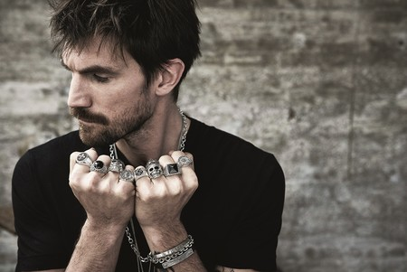
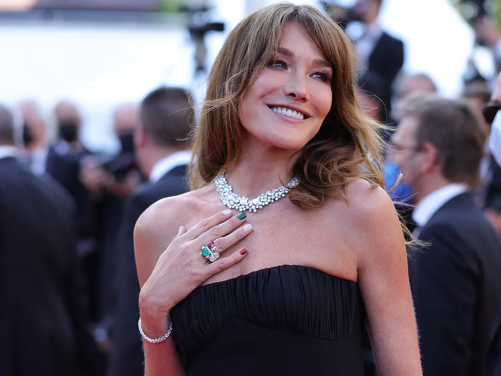

 Le recomendamos que haga una comparación de precios para ahorrar dinero al realizar el pedido. A continuación, se presentan los comentarios de la asociación de consumidores para este producto.Sidesea comprar Anillo hombre Brila, siempre debe prestar atención a algunos criterios. A continuación, nuestro expertos en pruebas han reunido los más importantes en una lista de verificación clara para ayudarle a tomar la mejor decisión de compra posible. Estamos seguros de que encontrará un buen producto en la categoría Anillo hombre Brila si tiene en cuenta nuestros criterios y recomendaciones en la búsqueda de productos.
Fabricante: ¿Hay fabricantes conocidos para Joyas hombre Brila? Opciones: ¿Hay reseñas de audio e informativas sobre Joyas hombre Brila? Comentarios de clientes: ¿Ya hay personas que compraron y evaluaron el producto? Dimensiones: ¿Qué tamaño del producto es necesario o incluso posible? Asociación de consumidores: ¿Cuál ha sido el resultado actual de la prueba de Joyas hombre Brila según la organización de consumidores? Resultados de la prueba: ¿Qué productos se encuentran actualmente en la categoría Joyas hombre Brila como ganadores? Precio: ¿De cuánto dinero dispone y qué ofertas son las más baratas de Joyas hombre Brila? Comparación: ¡Finalmente, se requiere una comparación completa de productos y precios basada en los criterios relevantes!Aquí nuestra famosa amiga Paula Reig vistiendo nuestras hermosas prendras de la colección Brila Forever
El color se ha convertido en un elemento indispensable en accesorios de la temporada. Los pendientes, collares y anillos con piedras de colores que son capaces de aportar un toque de diversión a cualquier conjunto y, esta primavera, han adquirido especial relevancia.
Perlas y conchas desde lo más profundo del océano y un collar de corazón que bien podría haberse rescatado del Titanic.
El creciente interés por la moda masculina está desatando la creatividad en todos los segmentos del mercado, incluyendo el de la joyería, que sirve para enmarcar cualquier logo y puede ser una manera más asequible de acceder a una marca que un look entero perteneciente a la misma. En las últimas temporadas Muchas de las joyas masculinas de las colecciones de primavera-verano irradiaban alegría soleada, una sensación similar a la que transmiten los collares de cuentas y similares que se hacen en los campamentos de verano.
Fotos de: Gilliam Giabetty/Hunter Arrivabene/Killiam Thomas
Nuestras secciones de collares de hombre y pedidos
El diseño y la innovación fueron protagonistas en esta cuarta jornada de la semana de la moda de París, gracias a las creaciones de Issey Miyake. Durante el último desfile de presentación de la colección primavera-verano, la firma reveló su nueva técnica, el conocido como "Baker stretching", que consiste en someter las telas a unas altas temperaturas con una especie de pegamento que consigue un efecto ultra plisado. Hoy, Miyake usó esa técnica para conseguir un efecto más invernal con la combinación de distintos retales que dan un efecto de movimiento y profundidad, en tonos azules, violetas y rojos. "En esta colección hemos intentado transmitir una sensación de viaje en el tiempo descubriendo todas las posibilidades del 'baker stretching' en prendas simples pero que ofrecen muchas nuevas opciones", contó a Efe el creador japonés Yoshiyuki Miyamae, responsable del diseño de la marca. Formas simples y rectas, como es tradicional en Miyake, que llevó a la pasarela faldas rectas por debajo de la rodilla y tops multicolor, alternando con algunos looks más sobrios formados por camisa y pantalón masculino. La gran apuesta de la firma japonesa fueron los abrigos, en los que la técnica estrella del plisado logra efectos hipnóticos y volúmenes imposibles.
Los suizos Serge Ruffieux y Lucie Meier, directores del equipo artístico, fueron los encargados de volver a dirigir la colección, donde destacaron abrigos ajustados en la cintura y sofisticados cuellos abiertos, aunque los accesorios se llevaron gran parte de la atención. Pendientes y piercings cubrían casi la totalidad de las orejas de las modelos que desfilaron con el pelo recogido y gafas de sol opacas con estampados. El lugar elegido para la celebración del desfile, al que acudieron como es habitual decenas de "celebrities" como Jessica Alba o Emmy Rossum, fue el emblemático Museo del Louvre. Se espera que la "maison" aproveche estos días para discernir el futuro de su dirección creativa que podría quizás quedar en manos del dúo suizo.